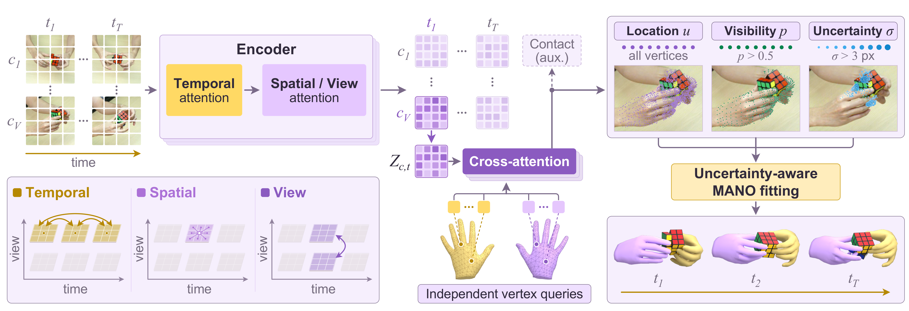

†Equal Contributions
High-accuracy hand motion capture typically relies on marker-based optical systems or instrumented gloves, yet applications such as visual imitation learning and hand-object interaction analysis require faithful visual observations of bare hands. Existing markerless methods often process views independently or aggregate them frame by frame, leaving complementary evidence across cameras and time underexploited. We present HandQuery, a dense 4D hand reconstruction framework for synchronized and calibrated multi-view videos. HandQuery integrates spatial, temporal, and geometry-aware cross-view fusion within the visual encoder, then uses independent MANO vertex queries to predict dense 2D surface landmarks, visibility, and uncertainty. This formulation supports flexible vertex selection during both training and inference. Uncertainty-aware multi-view MANO fitting integrates the predicted 2D observations into 4D hand meshes. To provide consistent dense supervision and broaden training diversity, we construct synthetic multi-view hand videos with varied appearances and camera configurations. Experiments demonstrate strong accuracy across five real-world benchmarks and robustness to fewer cameras. In zero-shot evaluation on a newly captured studio dataset, HandQuery reduces mean per-vertex error by approximately 39% relative to the strongest baseline.

Given synchronized and calibrated multi-view videos, our encoder aggregates complementary evidence across views and time through temporal, spatial, and PRoPE-conditioned view attention prior to landmark readout. Independent MANO vertex queries then cross-attend to the contextualized image features to predict dense 2D locations, visibility, and uncertainty for all 778 vertices, which drive uncertainty-aware multi-view MANO fitting.
Synchronized 4-view comparisons on unseen capture setups (left to right: Image, GT, WiLoR + Fit, POEM-v2, UA-Fit, MAMMA, and Ours*).
Synchronized 4-view reconstruction (top to bottom: Image, GT, and Ours*).
Synchronized 4-view comparisons colored by unaligned 3D per-vertex error (left to right: Image, GT, WiLoR + Fit, Sapiens2 + Fit, POEM-v2, UA-Fit, MAMMA, and Ours*).
Synchronized 8-view observations and interactive 3D retargeting to bimanual dexterous robot hands (Sharpa and Wuji). Drag to orbit, scroll to zoom, right-drag to pan.
@article{gu2026handquery,
title = {HandQuery: Dense Vertex Queries for Multi-View 4D Hand Reconstruction},
author = {Gu, Yi and Chen, Xuanhua and Zeng, Yupei and Cao, Hanyang and Xu, Mingxi and Gao, Yukang and Zhou, Yangchen and Zhang, Fanghai and Zhang, Weiming and Wang, Jiaxu and Du, Kang and Shen, Zhengyang and Xu, Renjing},
journal = {arXiv preprint arXiv:XXXX.XXXXX},
year = {2026}
}